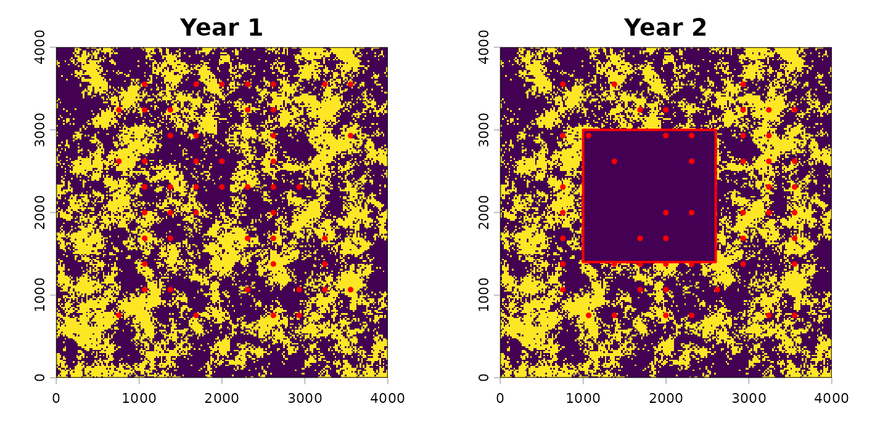
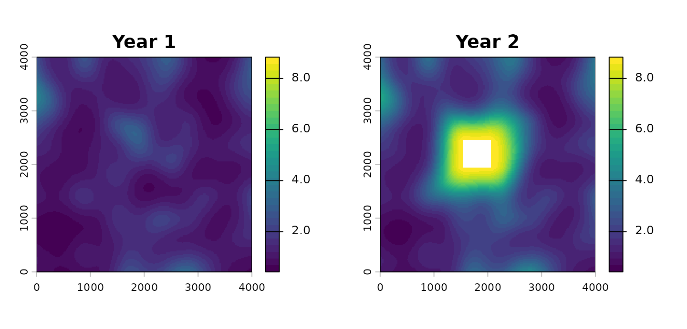
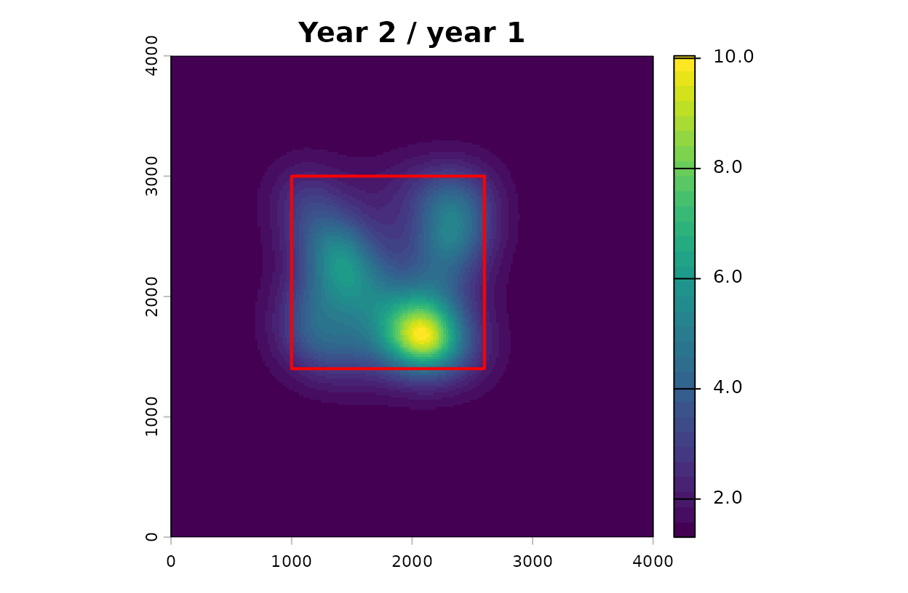

06. Using Year-Specific Rasters in One Model
Bill Peterman
Source:vignettes/v06-year-specific-rasters.Rmd
v06-year-specific-rasters.RmdWhat this vignette covers
Habitat changes between survey years. When it does, each observation should be paired with the map from its own year, and a single map for the whole study misstates the landscape around some of the survey points. This vignette shows how to fit one model to observations that draw on different maps.
You will build two annual habitat maps, prepare them together with
kernel_prep_by_group(), and estimate one scale of effect
and one habitat coefficient across both years. You will then map the
fitted model onto each year’s landscape. Read
vignette("v01-quickstart", package = "multiScaleR") first
for the basic preparation and optimization workflow.
Build the annual maps and the observations
The example starts from the Quick Start landscape and its 100 survey points. Year 1 uses the binary habitat layer as it is. In year 2, habitat has been cleared from a square 1,600 m on a side. Each point was surveyed in one of the two years.
data("surv_pts")
pts <- vect(surv_pts) # 100 survey locations as a terra SpatVector
land <- rast(system.file("extdata", "landscape.tif",
package = "multiScaleR"))
# The bundled objects carry no coordinate reference system (CRS).
# Assign the same projected CRS, in meters, to both.
crs(pts) <- "EPSG:26915"
crs(land) <- "EPSG:26915"
# Year 1: the binary habitat layer (1 = habitat, 0 = not habitat)
habitat_1 <- land$land1
names(habitat_1) <- "habitat"
# Year 2: the same map after habitat is cleared from one square
habitat_2 <- habitat_1
cleared <- ext(1000, 2600, 1400, 3000)
habitat_2[cells(habitat_2, cleared)] <- 0
# One row per observation, with the year of its survey: 50 points per year
set.seed(93)
obs <- data.frame(year = factor(sample(rep(c("year1", "year2"), each = 50))))
op <- par(mfrow = c(1, 2))
plot(habitat_1, main = "Year 1", legend = FALSE)
points(pts[obs$year == "year1", ], pch = 19, cex = 0.5, col = "red")
plot(habitat_2, main = "Year 2", legend = FALSE)
points(pts[obs$year == "year2", ], pch = 19, cex = 0.5, col = "red")
lines(vect(cleared), col = "red", lwd = 2) # outline of the cleared square
Habitat (yellow) in each year, with the points surveyed that year. The red square in year 2 marks the cleared area.
par(op)kernel_prep_by_group() places three requirements on its
inputs.
- All maps share one grid, with the same extent, cell size, and CRS.
- Layer names match across maps, here
habitat. - Points and maps share a projected CRS, so that distances are in map units (meters here).
If your maps hold land-cover class codes, convert the class of
interest to a binary layer first, as habitat is here. A
kernel-weighted mean of a binary layer is the proportion of that class
around a point. A mean of class codes has no ecological meaning.
The response in this example is simulated, so the estimates can be checked against known values. The expected count depends on habitat within a Gaussian kernel of sigma 250 m, measured on the map from the year of the survey.
# Kernel-weighted habitat at the true scale (sigma = 250 m) on each map
true_1 <- kernel_scale.raster(habitat_1, sigma = 250, kernel = "gaussian",
verbose = FALSE)
true_2 <- kernel_scale.raster(habitat_2, sigma = 250, kernel = "gaussian",
verbose = FALSE)
# Read each point's value from the map of its own year
hab <- ifelse(obs$year == "year1",
extract(true_1, pts)[, 2],
extract(true_2, pts)[, 2])
hab_z <- (hab - mean(hab)) / sd(hab) # standardize across all 100 rows
# Poisson counts: habitat lowers the expected count, year 2 raises it
obs$count <- rpois(nrow(obs),
exp(0.25 - 0.5 * hab_z + 0.3 * (obs$year == "year2")))Prepare one pooled set of covariates
kernel_prep_by_group() works like
kernel_prep(), with two differences. It takes a named list
of maps in place of a single raster, and a group vector
that names the map for each observation.
prepared <- kernel_prep_by_group(
pts = pts, # one point per observation
raster_stacks = list(year1 = habitat_1, year2 = habitat_2),
group = obs$year, # which map each observation uses
max_D = 1700, # largest distance (m) considered
kernel = "gaussian",
store_cell_data = FALSE, # keep only the distance-binned summaries
verbose = FALSE
)
head(prepared$kernel_dat, 3) # starting covariate values
#> habitat
#> 1 1.1074882
#> 2 0.9710966
#> 3 0.7299806
table(prepared$raster_group) # observations assigned to each map
#>
#> year1 year2
#> 50 50How to read the output: kernel_dat has
one row per observation, in the order of pts. Its
habitat column is the kernel-weighted proportion of habitat
at a starting value of sigma, centered and divided by the standard
deviation across all 100 observations. One mean and one standard
deviation apply to both years, which keeps the covariate on a single
scale in the model. raster_group records the map each row
used, and the table confirms 50 observations per year.
A year-2 observation uses the year-2 map even when the point lies
outside the cleared square, because the neighborhood around the point
can still reach into it. Set max_D beyond any plausible
scale of effect, as you would in kernel_prep().
store_cell_data = FALSE keeps the prepared object small
when every landscape covariate is a kernel-weighted mean. Landscape and
surface metrics need the individual cell values, and the function keeps
them whatever you set.
The points here differ between years. When you survey the same site in several years, give each survey its own row with the same coordinates and its own year label, and choose a response model that accounts for the repeated visits.
Fit one relationship across years
Fitting proceeds as in the Quick Start. Add the prepared covariate to
the observations, fit a starting model, and pass both to
multiScale_optim().
model_data <- data.frame(obs, prepared$kernel_dat)
# Starting model: one habitat slope, plus a shift in the baseline for year 2
start <- glm(count ~ habitat + year, family = poisson(), data = model_data)
# Estimate the shared scale of effect and the coefficients
fit <- multiScale_optim(start, prepared, n_cores = 1, verbose = FALSE)
est <- summary(fit)$opt_scale # sigma, SE, and 95% interval (m)
dist90 <- kernel_dist(fit) # radius holding 90% of kernel weight (m)
ci_beta <- confint.default(fit$opt_mod) # Wald 95% intervals, log scale
check <- data.frame(
Parameter = c("sigma, habitat (m)", "effect of habitat", "effect of year 2"),
Truth = c(250, -0.5, 0.3),
Estimate = c(est[, "Mean"], coef(fit$opt_mod)[c("habitat", "yearyear2")]),
Lower = c(est[, "2.5%"], ci_beta[c("habitat", "yearyear2"), 1]),
Upper = c(est[, "97.5%"], ci_beta[c("habitat", "yearyear2"), 2])
)
knitr::kable(check, digits = 2, row.names = FALSE)| Parameter | Truth | Estimate | Lower | Upper |
|---|---|---|---|---|
| sigma, habitat (m) | 250.0 | 236.02 | 141.31 | 330.74 |
| effect of habitat | -0.5 | -0.50 | -0.62 | -0.39 |
| effect of year 2 | 0.3 | 0.27 | -0.05 | 0.58 |
# Did every prepared observation enter the fitted model?
unlist(diagnostics(fit)$sample_size[c("fitted_n", "prepared_n")])
#> fitted_n prepared_n
#> 100 100How to read the output: The model estimates a single
sigma from both years, 236 m, with a 95% interval of 141 to 331 m. A
Gaussian kernel of that width holds 90% of its weight within 506 m of a
survey point. The two coefficients are on the log scale. A one standard
deviation increase in kernel-weighted habitat multiplies the expected
count by 0.60, a decrease of 40%. The year coefficient shifts the
baseline. At equal habitat, the expected count in year 2 is 1.31 times
the count in year 1. The last line shows that all 100 prepared
observations entered the fitted model. summary(fit) prints
the full report described in the Quick Start.
What this means for your study. This model assumes that the habitat effect and its scale are the same in every year. The
yearterm lets the baseline differ and does not test that assumption. With few years, the data say little about whether the relationship changed. To let the scale of effect itself differ among years, seevignette("v13-bayesian-scales", package = "multiScaleR").
Map the fitted model onto each year
Project each annual map separately. Both calls use the same fitted
kernel and the same pooled mean and standard deviation, so the two
surfaces are directly comparable. The model also contains
year, a categorical predictor with no raster. Name its
level for each map with site_values. Without it,
kernel_scale.raster() warns that it cannot fill in a
categorical predictor.
surface_1 <- kernel_scale.raster(habitat_1, multiScaleR = fit,
scale_center = TRUE,
site_values = list(year = "year1"),
verbose = FALSE)
surface_2 <- kernel_scale.raster(habitat_2, multiScaleR = fit,
scale_center = TRUE,
site_values = list(year = "year2"),
verbose = FALSE)
# Expected count in every raster cell, for each year
pred_1 <- terra::predict(surface_1, fit$opt_mod, type = "response")
pred_2 <- terra::predict(surface_2, fit$opt_mod, type = "response")
# Draw both years on one color scale
zlim <- range(minmax(c(pred_1, pred_2)))
op <- par(mfrow = c(1, 2))
plot(pred_1, main = "Year 1", range = zlim)
plot(pred_2, main = "Year 2", range = zlim)
Expected count across the landscape in each year, on a common color scale.
par(op)
# How many times higher is the expected count in year 2?
ratio <- pred_2 / pred_1
plot(ratio, main = "Year 2 / year 1")
lines(vect(cleared), col = "red", lwd = 2) # outline of the cleared square
Expected count in year 2 divided by expected count in year 1. The red square marks the cleared area.
How to read these maps: Each cell in the first figure is the count the model expects from one survey at that location in that year. The second figure divides one by the other. Far from the cleared square the ratio is constant at 1.31, which is the year effect alone, because the habitat around those cells did not change. Inside the square the ratio rises to 10.05. Habitat lowers the expected count in this model, so clearing it raises the prediction. The change also spreads past the edges of the square. A cell outside the clearing still lost habitat from its neighborhood, and the fitted kernel reaches about 506 m.
These surfaces describe what the fitted model predicts for each
annual landscape and its year term. They do not isolate a causal effect
of the clearing, because other conditions can differ between years. Some
cells on both maps also have more habitat around them than any survey
point had, so the model extrapolates there.
vignette("v03-map-predictions", package = "multiScaleR")
shows how to find those cells and limit the extrapolation.
Quick reference
library(multiScaleR)
library(terra)
# 1. Align the annual maps: one grid, one projected CRS, matching layer names
data("surv_pts")
pts <- vect(surv_pts)
land <- rast(system.file("extdata", "landscape.tif",
package = "multiScaleR"))
crs(pts) <- "EPSG:26915"
crs(land) <- "EPSG:26915"
habitat_1 <- land$land1
names(habitat_1) <- "habitat"
habitat_2 <- habitat_1
cleared <- ext(1000, 2600, 1400, 3000)
habitat_2[cells(habitat_2, cleared)] <- 0
# 2. Label each observation with its year (and add your response, here `count`)
set.seed(93)
obs <- data.frame(year = factor(sample(rep(c("year1", "year2"), each = 50))))
# 3. Assign each observation to its map and prepare pooled covariates
prepared <- kernel_prep_by_group(
pts = pts, raster_stacks = list(year1 = habitat_1, year2 = habitat_2),
group = obs$year, max_D = 1700, kernel = "gaussian",
store_cell_data = FALSE
)
# 4. Fit one scale of effect and one habitat coefficient across years
model_data <- data.frame(obs, prepared$kernel_dat)
start <- glm(count ~ habitat + year, family = poisson(), data = model_data)
fit <- multiScale_optim(start, prepared, n_cores = 1)
summary(fit) # shared sigma, distance, coefficients
kernel_dist(fit) # radius holding 90% of the kernel weight
diagnostics(fit)$sample_size # rows prepared and rows fitted
# 5. Map the fitted model onto each year
surface_1 <- kernel_scale.raster(habitat_1, multiScaleR = fit,
scale_center = TRUE,
site_values = list(year = "year1"))
surface_2 <- kernel_scale.raster(habitat_2, multiScaleR = fit,
scale_center = TRUE,
site_values = list(year = "year2"))
pred_1 <- terra::predict(surface_1, fit$opt_mod, type = "response")
pred_2 <- terra::predict(surface_2, fit$opt_mod, type = "response")
plot(pred_2 / pred_1) # change in expected count between yearsSummary of key functions
| Function | Purpose |
|---|---|
kernel_prep_by_group() |
Assign each observation to its own map and prepare one pooled set of covariates |
multiScale_optim() |
Estimate the shared scale of effect together with the regression coefficients |
summary(), kernel_dist()
|
Report sigma and the effective distance with their intervals |
diagnostics() |
Check how many prepared observations entered the fitted model |
kernel_scale.raster() |
Apply the fitted kernel to one annual map.
site_values sets the year |
terra::predict() |
Apply the fitted model to the smoothed map, cell by cell |
See also
-
vignette("v01-quickstart", package = "multiScaleR"), the single-map workflow and how to read a fitted model. -
vignette("v03-map-predictions", package = "multiScaleR"), finding and limiting extrapolation in a projected map. -
vignette("v04-landscape-metrics", package = "multiScaleR"), land-cover composition and configuration metrics as covariates. -
vignette("v13-bayesian-scales", package = "multiScaleR"), letting the scale of effect vary among years. -
vignette("v09-estimates-and-intervals", package = "multiScaleR"), what each estimate and interval includes. - The help page
?"multiScaleR-glossary"defines the terms used in these vignettes.